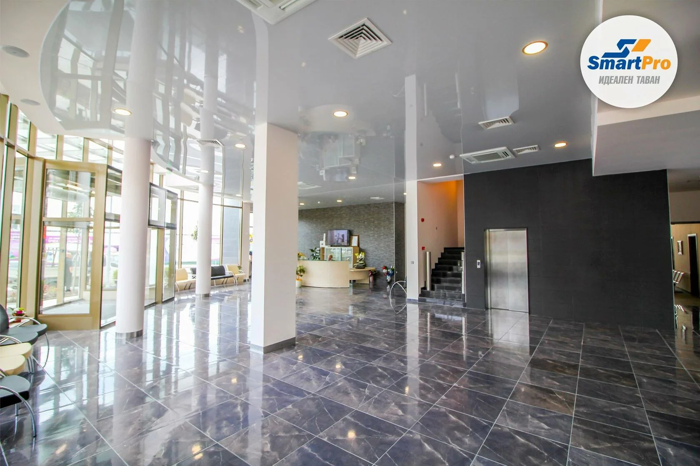

Управление на персонала и Управление на човешките ресурси – същност на понятията
Управление на човешките ресурси е онази част от управлението на организацията, която се занимава с възпроизводството на организацията като социално образувание, с оползотворяването на човешките ресурси в организацията с оглед реализацията на организационните цели по задоволителен начин.
Управлението на персонала се основава върху по-формален, социално доминиран подход. По-скоро е оперативна дейност, насочена предимно към отчитането на потребностите и интересите на наемните работници, която трябва да подпомогне ефективното управление на хората в трудовия процес.
